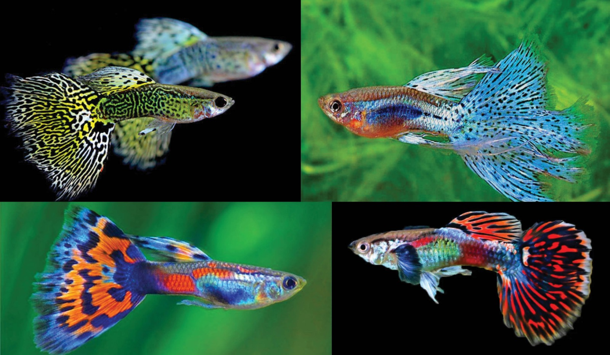

Haloo Sobat, Selamat Datang Kembali di Dunia Air! apakah Sobat disini suka memelihara ikan hias? nah, untuk sobat yang tertarik dengan ikan hias atau memiliki hobi memelihara ikan hias. Maka kamu tepat membaca website ini, karena website ini akan membahas jenis ikan hias air tawar yang cantik dan menarik untuk dipelihara.
Kehadiran hewan peliharaan di rumah dapat membantu seseorang merasa lebih tenang, terutama setelah menjalani hari yang penuh dengan aktivitas yang seringkali menimbulkan stres. Oleh karena itu, hewan peliharaan seringkali dapat meningkatkan semangat seseorang. Salah satu jenis hewan peliharaan yang sering dipilih oleh banyak orang adalah ikan hias.
Dengan beragamnya jenis ikan hias air tawar tentunya dapat membuatmu merasa bingung dalam memilih ikan air tawar yang akan menjadi hewan peliharaan. selain itu, kamu juga harus mengetahui cara perawatan ikan hias sebelum memilikinya, karena setiap jenis ikan meiliki karakteristik yang berbeda-beda.
berikut ini jenis ikan air tawar yang populer di kalangan penghobi ikan hias beserta karakteristik dari ikan hias tersebut:
1. Ikan Arwarna
sebagian orang yang tidak memilki hobi memelihara ikan hias mungkin tahu dengan ikan arwarna ini. ikan arwarna terkenal dengan karateristiknya yang anggun dan warna sisiknya yang menawan menarik pandangan setiap kali melihatnya.
bagi kalangan penghobi ikan hias, arwarna ini dianggap sebagai rajanya ikan hias air tawar. hal tersebut bisa saja benar mengingat harga arwarna ini memiliki nilai yang tinggi, tergantung dari jenisnya dan ukurannya, harga arwarna terendah dari jenis arwarna silver yang diperkirakan memiliki harga sekitar puluhan sampai ratusan ribu dan jenis arwarna termahal dari arwarna super red yang memiliki harga sekitar jutaan sampai ratusan juta rupiah.
selain itu, beredar mitos kepercayaan memelihara ikan ini di rumah dapat memberikan keberuntungan bagi si pemilik rumah.
namun, ada hal yang perlu diperhatikan sebelum memelihara ikan arwarna ini karena memerlukan perawatan berkala agar tidak stress, hal tersebut bisa bisa ditandai jika arwarna menabarakan dirinya ke kaca aquarium atau meloncat-loncat. sehingga disarankan untuk memberikan penutup aquarium supaya ikan tidak loncat.
2. Ikan Discus
Ikan discus adalah salah satu ikan hias yang paling indah dan sering dipelihara. Ini karena corak warnanya yang sangat unik. Jenis ikan discus juga beragam. Karakteristiknya yang tenang dan anggun membuat ikan ini disukai banyak penggemar ikan hias aquarium. Namun hal tersebut sebanding dengan perawatannya yang ekstra. Ikan discus dikenal membutuhkan banyak penyesuaian dan lingkungan untuk bisa bertahan dan merasa nyaman. Ini tentu bisa menjadi tantangan besar memelihara jenis ikan discus
3. Ikan Mas Koki

Ikan mas koki memiliki bentuk yang lucu serta warnanya yang menarik dan juga perawatannya yang mudah, hal tersebut membuat ikan mas koki menjadi salah satu jenis ikan hias yang sering dipelihara.
ikan mas koki memiliki banyak jenis yang berbeda-beda, ada beberapa jenis ikan mas koki yang populer di Indonesia yaitu jenis ikan mas koki ryukin, oranda, ranchu,fancy panda, dan masih banyak lagi.
4. Ikan Guppy
untuk pecinta aquascape, mungkin ikan guppy cocok dijadikan sebagai hewan penghuni. Ikan ini memiliki ukuran yang kecil, daya tarik ikan guppy adalah sirip ekornya dan sisiknya yang berwarna-warni tergantung jenisnya. warna ikan guppy merupakan salah satu yang dapat menentukan antara jantan dan betina. selain itu, ukuran betina lebih besar dibandingkan jantan.
5. Ikan Lohan
Ikan Louhan menjadi salah satu primadona dalam dunia ikan hias. Ciri khasnya adalah adanya jenong, yaitu benjolan besar di kepala ikan. Beberapa orang meyakini bahwa memelihara ikan Louhan bisa membawa keberuntungan bagi pemiliknya. Ikan Louhan juga sering disebut sebagai Flowerhorn karena warna sisiknya yang mirip bunga berwarna cerah dan menarik. Warna sisik pada jenis Louhan tertentu dapat berubah dan muncul corak baru seiring perkembangan ikan hias ini. Jika kita merawat Louhan sejak masih kecil, kita dapat melihat perkembangan warna sisiknya yang semakin cantik dan memikat.